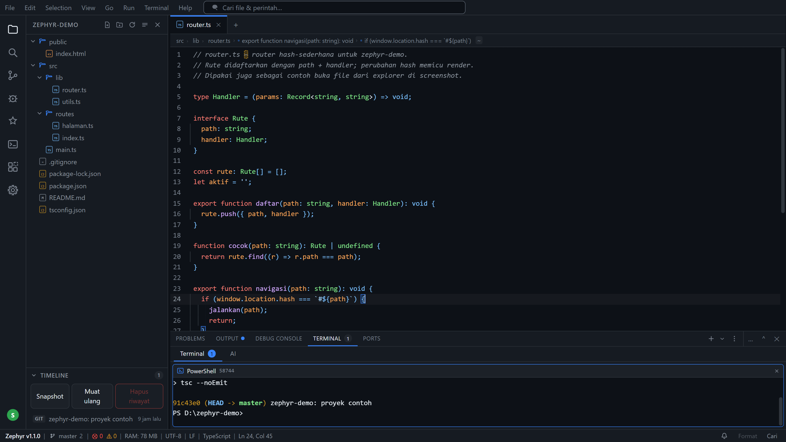

A code editor that AI CLIs can drive.
A Windows desktop editor built on Tauri 2, Rust, and React. About 9.5 MB on disk, WebView2 for rendering, and an MCP server on port 9222 so Claude Code, Codex, Gemini CLI, or opencode can read and drive the window. Bring your own key or run a local model.
The site and the editor are open source, too.
See Zephyr in action.
Editor, terminal, AI panel, and source control - side by side in one window.

A real editor, not a text box.
CodeMirror 6 with per-language LSP, so completion, hover, go-to-definition, rename, and format work once a language server is running. Files over 4 MB open in a light read-only mode instead of freezing the UI.
- Encoding detection: UTF-8, BOM, Windows-1252, UTF-16 LE/BE
- Multi-file tabs, session restore, and split groups
- Find and replace with regex, plus multiple cursors and code actions
- Rendered Markdown, and image, PDF, and SVG preview
Panes that hold a shell, a browser, or an agent.
Up to six panes per tab over ConPTY. Run PowerShell, cmd, pwsh, bash, or WSL, open a private terminal whose scrollback is wiped on close, or open a browser pane that reads the real page instead of an iframe.
- Shell, private, agent, and browser panes in one grid
- Private terminal clears history on close
- Dedicated pane for an agent CLI: opencode, Claude Code, Codex, Gemini, Copilot
- Split with browser for a live preview next to the shell
Git without leaving the tab.
Stage, commit, branch, push, pull, and read history. Blame the active file, stash work, resolve conflicts, and rebase, all from the source control panel.
- Status, diff, stage, unstage, commit, discard, branch, and log
- Inline blame for the active file, written to the Output panel
- Stash save, list, pop, and drop
- Conflict resolver with take ours or take theirs
- Write a commit message from the diff with one click
Agents that read, plan, and run tools.
Chat streaming or an agent that works a task to the end: it reads files, runs commands, and calls tools. The workspace is summarized up front, so the model knows the stack and the file map before it starts. Keys stay on the Rust side; the UI only sees a masked preview.
- Three adapter formats: OpenAI, Anthropic, and Gemini
- Tool calls sent as inline XML are parsed too, so gateway models still run tools
- Subagents run in parallel, each with a role, step log, and cancel
- BYOK or a local endpoint, including Ollama and any OpenAI-compatible server
- Optional local RAG that feeds top project chunks to the model as context
Let your CLI drive the window.
An HTTP JSON-RPC server on port 9222 with a Bearer token, loopback only, and a switch to turn it off. More than twenty methods read panes, write the terminal, and edit buffers. editor_write changes the buffer only and never writes to disk, so a wrong edit does not touch your files.
- Register Zephyr with Claude Code, Codex, Gemini CLI, or opencode in one click
- Read panes, write the terminal, open files, run editor commands
- Requests wait for the UI and retry, so a call made during startup is not lost
/healthneeds no token and does no UI work
Make it yours.
Nineteen themes, including a High Contrast theme that passes WCAG AAA. Pick a background image with its own opacity, stored separately from the theme. Remap every shortcut with conflict detection.
- 19 themes, each setting every token at once
- Background image with adjustable opacity
- Customize Layout panel for the menu bar, activity bar, sidebar, panel, and status bar
- UI in 10 languages, defaulting to English
More built in. No plugins required.
Pick a build. Run it.
No account, no telemetry. Signed releases on GitHub. The app verifies the signature before it updates.
Install in three steps.
Windows 10 or 11. WebView2 is already present on Windows 11, so it usually just runs.
Grab Zephyr_1.1.11_x64-setup.exe from Releases.
SmartScreen may warn because the installer is not signed with a paid certificate. Click More info, then Run anyway.
Zephyr opens. Use Open Folder to load a project. Settings, keys, extensions, and logs live in %APPDATA%\zephyr\; delete that folder for a full reset.
Questions, answered.
Neither. It is built from scratch on Tauri 2, React, and Rust. The renderer uses WebView2, which already ships with Windows, so no Chromium is bundled. That bundled Chromium is where Electron's size and memory come from.
There is no always-on extension host and no bundled browser. A language server starts when you open a file of that type and shuts down after it goes idle.
Through the Marketplace (Open VSX) or a manual .vsix. Version 1 supports static contributions: languages, themes, snippets, keymaps, and command palette entries. Extension JavaScript is not run, for safety, so extensions that need the full VS Code extension host do not work yet.
Through the MCP server on port 9222 (HTTP JSON-RPC with a Bearer token). Claude Code, Codex CLI, Gemini CLI, or opencode can open files, read terminal panes, and change editor buffers. editor_write only touches the buffer, so you save manually and a wrong edit does not change the file on disk.
In %APPDATA%\zephyr\: settings, history, and secrets. API keys are obfuscated with XOR and a BLAKE3 key, which is not real encryption. There is no telemetry, no analytics, and no crash reporting.
The installer is not signed with a paid certificate, so Windows shows a warning. The source is open and can be verified in the GitHub repo. If you would rather build it yourself: install Node and Rust, then run npm install and npm run tauri build.
Yes, from 1.1.1 onward. Open Settings, then About, then Check for updates. The app verifies the release signature before it installs. Version 1.1.0 has no update endpoint and needs a manual install.